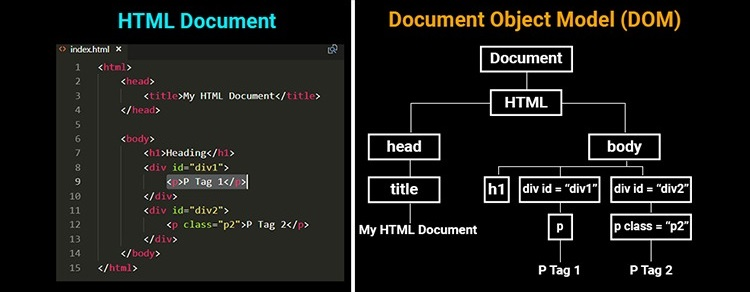

Javascript and DOM
F28WP Web Programming
2020-2021
## Overview * What is the **Document Object Model (DOM)**? * What are the different **version** of DOM? * Advantages of using JS and DOM? * Key **Methods** and **Properties** of DOM * Examples * Questions and Discussion <aside class='notes'> </aside>
## Revision Question Implement the ensure function so that it throws an error if called without arguments or the argument is undefined. Otherwise it should return the given value. ``` function ensure(value) { // Your code goes here } try { console.log(ensure()); } catch(err) { console.log(err); } ``` <aside class='notes'> </aside>
## Answer ``` function ensure(value) { // Your code goes here if ( arguments.length <= 0) { throw( 'no args'); } if ( typeof arguments[0] == "undefined" ){ throw( 'undef arg') } return arguments[0]; } try { console.log(ensure()); } catch(err) { console.log(err); } ``` <aside class='notes'> </aside>
## Revision Question Consider the following code: ``` function myAdd(arr){ arr[1]++; arr=arr+arr; } a = new Array(1,3,2,5); myAdd(a); ``` What is the value of **a** after this code executes? * A: **a** remains original value 1,3,2,5 * B: **a** contains the array 1,4,2,5 * C: **a** becomes an 8-element array 1,4,2,5,1,4,2,5 * D: **a** contains the string "1,4,2,5,1,4,2,5" <aside class='notes'> </aside>
## Answer * Answer **B**: a contains the array 1,4,2,5 ---- <aside class='notes'> </aside>
## JavaScript in **Browser** * JavaScript in browser supports document object i.e. page’s **root** node. * **writeln()** function **overwrites contents** of loaded page. ``` document.writeln("Hello World!"); ``` <aside class='notes'> </aside>
## JavaScript in Browser Running scripts in a **web** browser 1. External script (imported and run) ``` <script src="simple.js"></script> ``` 2. Declared **inline** ``` <script> document.writeln("Hello World!"); </script> ``` <aside class='notes'> </aside>
## JavaScript in Browser * **Inline** JavaScript can be **invalid XML** - space after "<" is illegal! * Putting offending code in **CDATA section** hides it from XML parser ``` <script> /* <![CDATA[ */ function negative(x) { if ( x < 0 ) return true; return false; } /* ]]> */ </script> ``` * Commenting out CDATA section hides it from JavaScript engine * **Only XHTML** markup with inline JavaScript may need this <aside class='notes'> </aside>
## **Generating** Variety in Pages * One use of **JavaScript** is to create variety in web pages * Generate new webpage **content** * Manipulate and update content (dynamically in real-time) <aside class='notes'> </aside>
## Example **Generating** Variety in Pages * Create colours.js script * Add 3 functions to make table of random colours - getHue() is an anonymous function that constructs a reply - there are 2 builtin functions: 1. **Math.floor(n)** returns nearest integer below n 2. **Math.random()** create random number between 0 and 1 <aside class='notes'> </aside>
## Example ``` function getHue(range) { var c = function () { return Math.floor(Math.random()*range); } return "rgb(" + c() + "," + c() + "," + c() + ")"; } function getTable(size, range) { var s = "<table>"; for (var i=0; i<size; i++) { s += "<tr>"; for (var j=0; j<size; j++) s += "<td style=\"background-color:" + getHue(range) + "\">" + " </td>"; s += "</tr>"; } s += "</table>"; return s; } ``` ``` var s = getTable(Math.floor(Math.random()*40 + 1), 256); document.writeln(s); ``` <aside class='notes'> </aside>
Example
## Document Object Model (**DOM**) * Document Object Model - applies to parsed HTML and XML content in DOM systems - defines objects and interfaces to **access** and manipulate it * Has **versions** - levels 0, 1, 2, 3, 4 (and alleged living standard) * DOM 0 is informal, only applies to HTML and doesn’t consider XML * DOM 0 views HTML components rendered in window as a **hierarchy** <aside class='notes'> </aside>
Document Object Model
Document Object Model

## Document Object Model * DOM 0 supports designations such as - **window.location.href** URL of currently loaded page - **document.forms** array of for ms in document - **document.forms[0]** array of objects in 1st for m in document - **document.forms[1].elements[3]** 4th element in 2nd form in document * DOM 0 can address form controls using name **attributes**: ``` <form name="form2" ... > <input type="text" name="txt3" ... > </form> ``` * **document.form2.txt3.value** refers to contents of this text entry box <aside class='notes'> </aside>
## Page Element Scripting * HTML4 let page elements register **event handlers** via **attributes** * Value of attribute is script that’s run when event occurs with element * Simple calculator can be realised this way: ``` <input size="15" onchange="this.value = eval(this.value)"> ``` * eval() computes expression’s value and result replaces it <aside class='notes'> </aside>
## Event Handlers * **Event handler** attributes for elements include - **onchange** form control loses focus after changing during focus - **onclick** pointing device is clicked over element - **onkeypress** key is pressed and released over element - **onmouseover** pointing device is moved onto element - **onselect** user selects some text in text field * Hyper links can be activated by a mouse over event <aside class='notes'> </aside>
## Example * Put cursor over one of Edinburgh * Heriot-Watt * Edinburgh Napier * Mouse Over event triggers function call which triggers hyper **link**. * **Changing** value of window.location.href loads its new URL. ``` <script> function go(hei) { window.location.href = "http://www." + hei + ".ac.uk"; } </script> <p> Put cursor over one of <em onmouseover='go("ed")'>Edinburgh</em> * <em onmouseover='go("hw")'>Heriot-Watt</em> * <em onmouseover='go("napier")'>Edinburgh Napier</em> </p> ``` <aside class='notes'> </aside>
## Document Object Model **1** * **DOM 0** doesn’t allow all parts of loaded HTML to be addressed * **DOM 1** introduced a systematic, **comprehensive** scheme - Core interface applicable to any document - HTML interface for accessing and manipulating parsed HTML * Nodes in DOM 1 **hierarchy** include the following types - **document** whole HTML or XML document - **element** such as a table or tr - **attribute** attribute of element such as class or id - text or CDATA - entity escape sequence like ♅ for symbol for uranus - comment <aside class='notes'> </aside>
## Nodes are root nodes, leaf nodes have 1+ children and a parent * Crucial DOM 1 methods include: * **getElementById()** get element by its unique ID attribute value * **getElementsByTagName()** get all elements with given tag name <aside class='notes'> </aside>
## Form **Validation** and DOM * Validation code can use DOM addresses to access form elements to - ensure user has supplied all essential form details - check datatypes entered in for m are valid values * User can be war ned by a popup alert if errors are found. <aside class='notes'> </aside>
## Example Form uses return value of checkData() to control its submission: ``` <form onsubmit="return checkData()" action="echo.php"> Name <input name="Name" id="user" size="40"> <p> Sex <select name="Sex"> <option> male <option selected> female </select> Age <input name="Age" id="age" size="3"> <input type="submit"> </form> ``` * Notice the ```checkData()``` call <aside class='notes'> </aside>
* JavaScript function checkData() performs checks ``` function checkData() { var name = document.getElementById("user").value; if ( name.length < 2 || (/[ˆA-Za-z\s\-]/).test(name) ) { alert("Name should have 2 or more letters, hyphens, spaces"); return false; } var age = document.getElementById("age").value; if ( age.length == 0 || (/[ˆ0-9]/).test(age) || age < 0 || age > 120 ) { alert("Please give age between 0 and 120"); return false; } return true; } ``` - Names may only have 2+ alphabetic letters, spaces and hyphens. - Ages may only have 1+ digits and lie between 0 and 120. <aside class='notes'> </aside>
## **DOM 2+** Specifications DOM 2 recommended in 2000 supports 6 specifications * DOM 2 Core **extends functionality** of DOM 1 Core - offers key ECMAScript Bindings * DOM 2 Views extension of DOM 2 Core obsoleted by HTML 5 * DOM 2 Events generic event system for scripts - methods to add **event listeners and handlers** * DOM 2 CSS interfaces for dynamic access/update of style sheets - enables script control of any style property * DOM 2 HTML enhances script access/update of (X)HTML documents * DOM 2 **Traversal** lets scripts traverse range of content in document <aside class='notes'> </aside>
## **DOM 3** DOM 3 recommended in 2004 supports 3 specifications * DOM 3 Core **extends** functionality of DOM 2 Core - adds and extends methods relating to **XML** * DOM 3 Load and Savelets scripts load and save XML documents - covers **serializing DOM document into XML** * DOM 3 **Validation** guides scripts updating pages validly Other useful DOM 3 related specifications include * DOM 3 Events builds on functionality of DOM 2 Events - **event flow, handler registration, contextual data** * DOM 3 XPath functions to access DOM via XPath expressions <aside class='notes'> </aside>
## DOM 4 * **DOM 4** was recommended in 2015 * Consolidates DOM level 3, Selectors API level 2, UIEvents * Offers mutation observers to replace mutation events * DOM Living Standard adds WhatNG wish list for DOM <aside class='notes'> </aside>
## DOM API Examples DOM 2 Core created JavaScript function and property API for nodes: - **appendChild(el)** add el as child of invoking element - **createElement(tagname)** create element of tagname - **getAttribute(name)** get value of attribute name of element - **removeChild(el)** remove child el of element - **setAttribute(name, value)** set name attribute of element to value Node properties - childNodes, nodeType, nodeValue, parentNode <aside class='notes'> </aside>
## Example Dynamically replace image in page with a new one ``` function makeMiserable() { var minion = document.createElement("img"); minion.setAttribute("src", "minion.jpg"); minion.setAttribute("alt", "Despicable Me"); var up = document.getElementsByTagName("img")[1]; var parent = up.parentNode; parent.removeChild(up); parent.appendChild(minion); } ``` <aside class='notes'> </aside>
## Example InnerHTML interface provides shortcut for making DOM changes ``` function makeSad() { var e = document.getElementsByTagName("img")[1].parentNode; e.innerHTML = "<img src='minion.jpg' alt='Despicable Me'/>"; } ``` <aside class='notes'> </aside>
* Parse HTML to DOM subtree to replace node’s children * DOM 2 also added event listeners to attach callbacks to events * Hover sensitive warning can be set over an image ``` function setWarning() { handler = function(e) { alert("Hands Off!"); } var el = document.getElementById("treasurechest"); el.addEventListener("mouseover", handler); } ``` * Event listener callback can be removed with same arguments ``` function unsetWarning() { var el = document.getElementById("treasurechest"); el.removeEventListener("mouseover", handler); } ``` <aside class='notes'> </aside>
## CSS Selectors and DOM Style * CSS Selectors use patterns to match nodes in DOM tree structure. * Selectors API level 1 from 2013 is current W3C recommendation. * API enables use of CSS selectors to match DOM nodes - **querySelector()** first node matching CSS selector argument - **querySelectorAll()** all nodes matching CSS selector argument * CSS selectors provide powerful way to specify bits of DOM to change * Alter native approach would be to use DOM 3 XPath expressions <aside class='notes'> </aside>
* DOM 2 CSS - adds style property interface to get/set CSS 2 properties - renames CSS properties in JavaScript without use of "-" * CSS property **"font-size"** in JavaScript becomes **"fontSize"** * Emphasized text in page can be made larger and smaller with ``` function changeFontSize(size) { var a = document.querySelectorAll('em'); for ( var i in a ) { if ( i != undefined ) a[i].style.fontSize = size + ’pt’; } } ``` <aside class='notes'> </aside>
* DOM 2 API can also be used to **add style** directives to page ``` function addStyle() { var el = document.createElement("style"); var tn = document.createTextNode("body { font: 20px verdana; }"); var tn1 = document.createTextNode("p { line-height: 200%; }"); el.appendChild(tn); el.appendChild(tn1); document.head.appendChild(el); } ``` * DOM 2 function **createTextNode()** adds text to loaded page <aside class='notes'> </aside>
## **Debugging** Page Scripts * JavaScript errors - Causes all the segment code to be ignored - Error messages sent to **JavaScript console** * JavaScript console or debugging alerts can be found - Internet Explorer under Tools, Internet Options, Advanced - Enable "Disable script debugging (Internet Explorer) - Mozilla Firefox under Developer, Browser Console - **Chrome** under More tools, Developer tools <aside class='notes'> </aside>
## Example Illegal Javaxcript such as the script below ```html <html> <body> <script> banana </script> </body> </html> ``` Run the example script and view the error console log output. <aside class='notes'> </aside>
* Produces error message alert in IE if that facility is enabled ``` Line: 4 Error: 'banana' is undefined ``` * In Chrome following error message is given in JavaScript console ``` Uncaught ReferenceError: banana is not defined at script.html:4 ``` * JavaScipt errors are very common in web pages * It is **good practice** to check for errors when developing JavaScript * Loading JavaScript from separate script can also ease debugging ``` <script src="myscript.js"></script> ``` <aside class='notes'> </aside>
* The Document Object Model from version 1 onwards **standardises** the objects and interfaces for accessing and updating the content, structure and style of loaded HTML (and XML) documents. * Key **DOM methods** for **accessing** parts of loaded web pages are getAttribute(), getElementById(), getElementsByTagName(), querySelector(), querySelectorAll(). * Key **DOM methods** for **updating** loaded web pages are setAttribute(), appendChild(), removeChild(), createElement(), addEventListener(), removeEventListener(). * Key **DOM** node **properties** in loaded web pages are childNodes, nodeType, nodeValue, parentNode, innerHTML, style. <aside class='notes'> </aside>
## Summary * Understand **Javascript and DOM** * **Structure** and style of HTML documents * Key **methods** for accessing/updating web page elements * Key **properties** <aside class='notes'> </aside>
## To do this week ... * Read over the lectures * Review the revision questions * Work through tutorial practicals * Experiment (get into good habits) * Browse JavaScript Guide and Reference [w3school-js](https://www.w3schools.com/js) and [w3school-jsref](https://www.w3schools.com/jsref) * Browse JavaScript HTML DOM Tutorial [w3school-js-htmldom](https://www.w3schools.com/js/js_htmldom.asp) * Browse DOM Level2Specification: ECMAScript Language Bindings [w3-ecma-script](https://www.w3.org/TR/DOM-Level-2-Core/ecma-script-binding.html) <aside class='notes'> </aside>